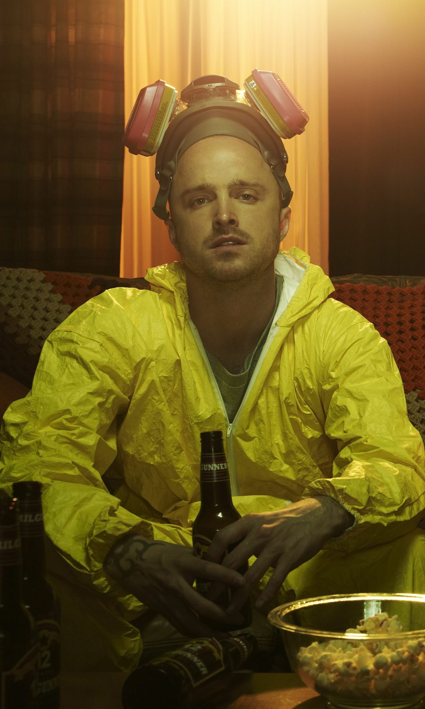
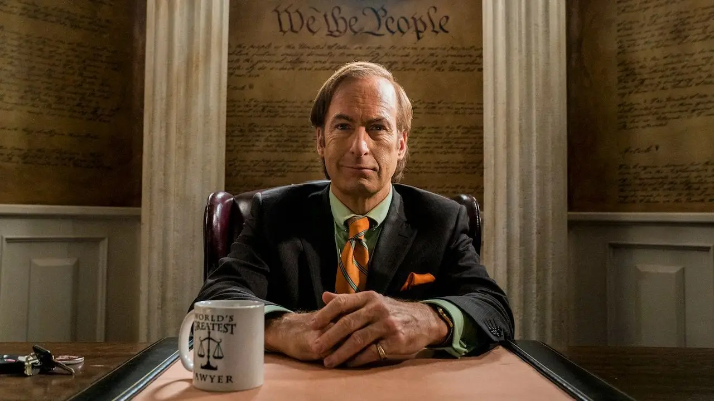

Walter White
Profesor de química y padre de familia que comienza a fabricar metanfetamina tras recibir un diagnóstico terminal.
Personajes
Walter White pasa del aula a las drogas con una ambición que se vuelve más peligrosa que cualquier laboratorio.
Jesse Pinkman representa la parte humana de la historia: culpabilidad, lealtad y supervivencia.
Saul Goodman y Gus Fring aparecen como piezas clave del engranaje criminal.


